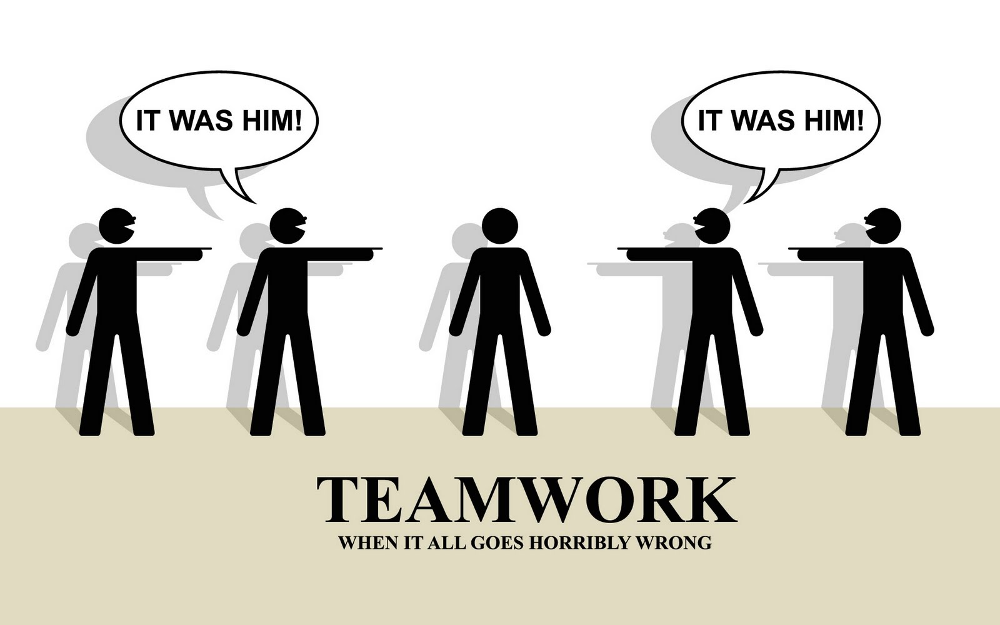

Masterplan
Build to share!
come si fa
30 marzo 2016 by opensensordata / @osd_it
la gioia del lavoro
fonteChi ha detto:
“Il lavoro nobilita l'uomo”
mentiva
Con il sudore del tuo volto mangerai il pane
Genesi 3,19 - Charles Joseph Natoire, 1740
Il trucco è organizzarsi e condividere
per levarsi dalle p411€ il lavoro il prima possibile
facendo le cose per bene
La condivisione è la squadra
(e viceversa)
fonte
I ruoli➦
gli schemi➦
vige l'eguaglianza
Il Commmittente➦
Il Progettista
Il Direttore Lavori
Il Capo Cantiere
fonteI Capi Squadra
fonteI Dati Operai➦
L'approccio non deve essere mai fine a se stesso
fonteApproccio "Chuck Norris"
fonteApproccio "MacGyver"
fontetra Chuck Norris o MacGyver
cerca l'equilibrio tra opportunità e interesse
opportunità e interesse come compensazione
per ridurre la complessità
agili sul filo tra semplice e banale
La condivisione
all'interno
all'esterno
Condividere all'interno
fonte{kind=link}
Condividere all'esterno
fonte{kind=link}
Dovete far lavorare i dati per voi
fonteVoi non dovete lavorare per le macchine
fonteL'uso delle gif
ogni attività è inserita in un loop
L'osservazione e la ricerca del benessere nelle attività, modificano il loop
La noia uccide: siate curiosi
l'unica cosa che ci distingue dalle macchine è la curiosità
Grazie
www.opensensorsdata.it | Masterplan - Build it to Share! | doc.opensensorsdata.it opensensorsdata review